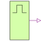

PulseDigital Pulse Source |

|
Information
This information is part of the Modelica Standard Library maintained by the Modelica Association.
The pulse source forms pulses between the quiet value and the pulse value. The pulse length width is specified in percent of the period length period. The number of periods is specified by nperiod. If nperiod is less than zero, the number of periods is unlimited.
To specify the logic value parameters, the integer code has to be used.
Code Table
| Logic value | Integer code | Meaning |
| 'U' | 1 | Uninitialized |
| 'X' | 2 | Forcing Unknown |
| '0' | 3 | Forcing 0 |
| '1' | 4 | Forcing 1 |
| 'Z' | 5 | High Impedance |
| 'W' | 6 | Weak Unknown |
| 'L' | 7 | Weak 0 |
| 'H' | 8 | Weak 1 |
| '-' | 9 | Do not care |
If the logic values are imported by
import L = Digital.Interfaces.Logic;
they can be used to specify the parameter, e.g., L.'0' for forcing 0.
Parameters (6)
| width |
Value: Type: Real Description: Widths of pulses in % of periods |
|---|---|
| period |
Value: Type: Time (s) Description: Time for one period |
| startTime |
Value: Type: Time (s) Description: Output = quiet for time < startTime |
| pulse |
Value: Type: Logic Description: Pulsed value |
| quiet |
Value: Type: Logic Description: Quiet value |
| nperiod |
Value: Type: Integer Description: Number of periods (< 0 means infinite number of periods) |
Connectors (1)
| y |
Type: DigitalOutput |
|---|
Used in Examples (1)
|
Modelica.Electrical.Analog.Examples Conversion circuit |